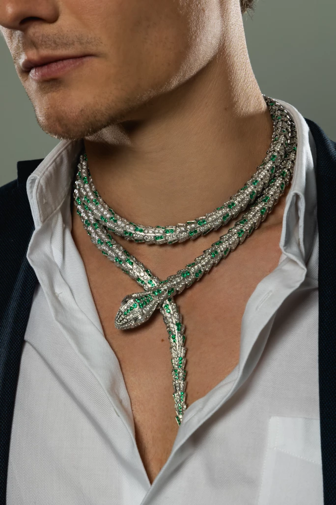
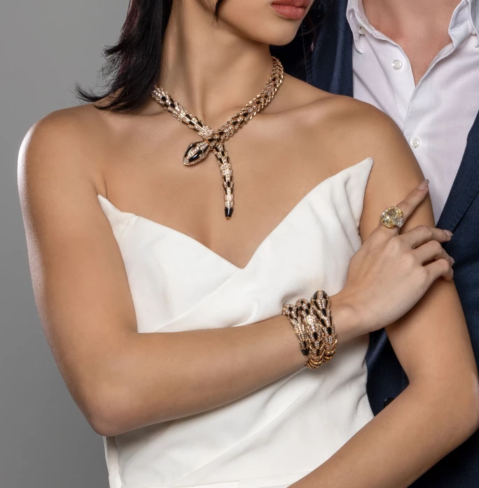
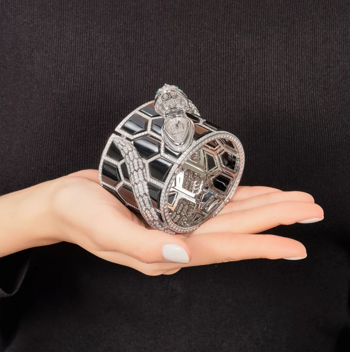

譯自 Jacqueline Kot · Sotheby's Hong Kong · 2023年1月20日
蛇象徵危險、神秘和慾望，令人好奇又畏懼。意大利珠寶世家寶格麗在75年前開始，以蛇的形象為題材，歷年來推陳出新，以變化萬千的設計演繹靈蛇的莫名之美。
自遠古以來，蛇一直遊走於各地文明的土壤上。牠不但在伊甸園中引誘夏娃偷食禁果，亦穿行於古希臘、羅馬、埃及神話傳說中，跨越不同時代領域，令人類又敬又畏。
蛇軀蜿蜒曼妙，為珠寶設計師帶來無限遐想，寶格麗 Serpenti 系列可算是當中最廣為人知。自1948年面世以來，Serpenti 系列就像一條蛻皮再生的蛇，以層出不同的面貌為珠寶鑑賞家帶來連番驚喜。
蛇的神秘力量

寶格麗 | Serpenti 祖母綠配鑽石項鏈
古埃及法老王的王冠上有蛇的圖案，稱為「神聖毒蛇」（Uraeus），傳說能庇佑法老王，並賦予他們無上的統治權威。
在古希臘和羅馬，蛇與治療息息相關。希臘神話中，阿波羅之子阿斯克勒庇俄斯是一位醫神，手執的權杖盤繞著一條蛇，至今仍是醫學和保健領域的象徵。然而，蛇的形象有時也會令人生畏，例如頂著一頭蛇髮的女妖美杜莎。
在高級珠寶的歷史中，蛇的身影亦無處不在。埃及豔后克利奧帕特拉（Cleopatra）對蛇形首飾情有獨鍾，而這些珠寶亦構成了她的美豔形象。1839年，阿爾伯特親王送贈維多利亞女王一枚象徵永恆愛情的蛇形戒指。這枚18K金戒指由親王親自設計，以紅寶石為眼、鑽石為嘴，正中鑲有一顆維多利亞女王的誕生石祖母綠，足見他對女王的心意。
到了20世紀，除了寶格麗之外，其他珠寶品牌亦紛紛在設計中注入蛇的元素。1968年，卡地亞（Cartier）為墨西哥女星瑪莉亞·菲利斯（María Félix）設計了一條蛇形項鏈。這條鉑金、白金和黃金項鏈密鑲2,473顆鑽石，蛇眼是兩顆梨形祖母綠；蛇的下腹飾綠色、紅色和黑色琺瑯，無論從哪個角度看都美輪美奐。
不過，寶格麗始終才是蛇形珠寶的皇者，Serpenti 系列幾乎可以說是寶格麗的靈魂，也是品牌最暢銷的系列。
早期 Serpenti 系列
第一款 Serpenti 腕錶在1948年誕生，它是一款以黃金打造的手鐲腕錶，錶盤採用方頭設計，錶帶環繞手腕數圈。這獨特的手鐲形錶帶採用了 Tubogas 技術，以金屬彈性線圈模仿柔軟彎曲的蛇身。
1950年代，Serpenti 系列的蛇形設計更靈動逼真，蛇頭上的雙眼鑲有紅寶石、藍寶石或祖母綠等寶石，目光灼灼，更顯栩栩如生。另外，錶盤巧妙隱藏在蛇口中，鐘錶界因此稱之為 secret watch（「神秘錶」）。

寶格麗 | Serpenti 鑽石配縞瑪瑙項鏈；寶格麗 | Serpenti 鑽石配縞瑪瑙手鏈
到了1960年代，Serpenti 手鐲腕錶的錶身以金軸連接金質鱗片，更見精緻動人。部分設計亦加入了色彩鮮豔的琺瑯，並使用青金石、珊瑚、翡翠、縞瑪瑙和綠松石等寶石裝飾蛇鱗。
1960至70年代，寶格麗復興 Tubogas 風格，推出呈幾何形狀的錶盤。伊麗莎白·泰萊（Elizabeth Taylor）更與寶格麗結下了不解之源。她在羅馬拍攝電影「埃及豔后」時買了一枚 Serpenti 手錶，與她主演的角色形象不謀而合。當時，泰勒陷入三角關係，周旋在丈夫艾迪·費舍（Eddie Fisher）和電影男主角李察·伯頓（Richard Burton）之間；隨著大眾對她的關注不斷提高，寶格麗在羅馬以外的名氣亦越來越大。
21世紀的 Serpenti 系列
2010年，寶格麗結合 Tubogas 錶帶和蛇頭設計，打造出 Serpenti Tubogas 系列；2017年，品牌推出 Twist Your Time 系列，當中的 Serpenti 手錶配螺旋皮革錶帶。

寶格麗 | Serpenti Misteriosi Secret 鑽石配縞瑪瑙及祖母綠手鐲腕錶
Serpenti 系列的設計亦延伸到項鏈、手鐲和戒指等其他首飾類別。除了高級珠寶之外，寶格麗亦有創作適合日常佩戴的休閒單品。18K白金的 Serpenti Viper 單圈細手鐲有純金或密鑲鑽石款式；至於18K玫瑰金 Serpenti Viper 戒指則是簡約優雅之選。
一如蛇歷經蛻變重生，寶格麗 Serpenti 系列亦不斷演化，無論是新舊設計皆各有韻味，且經久如新。這條百變靈蛇的前世今生，不知會否勾起大家探看的慾望？